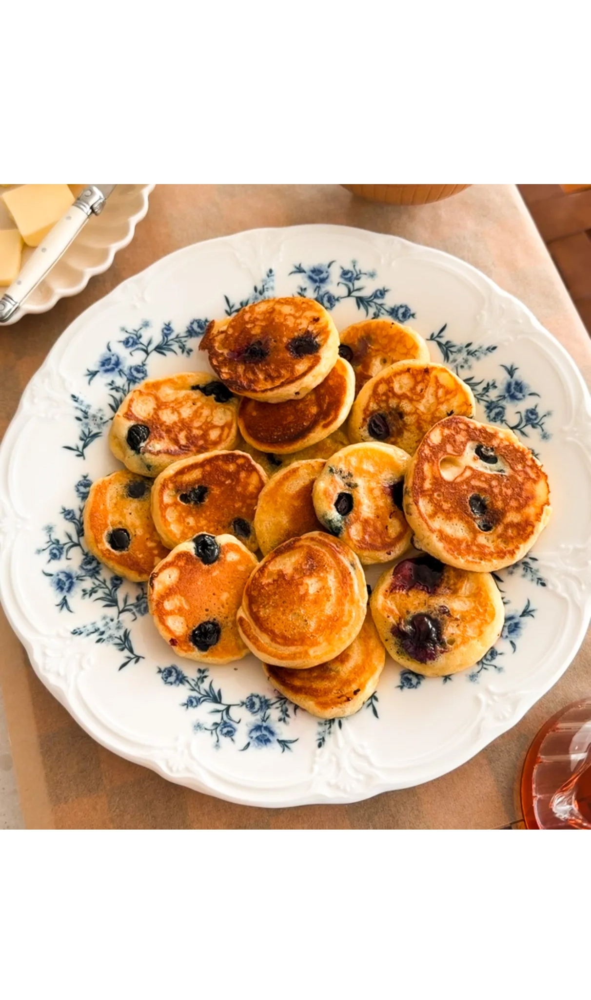
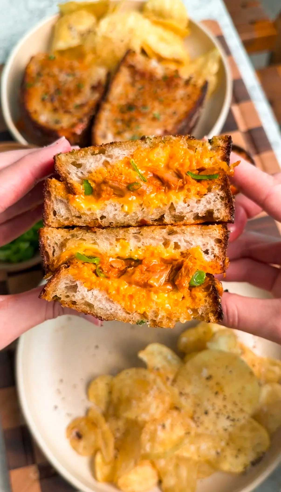
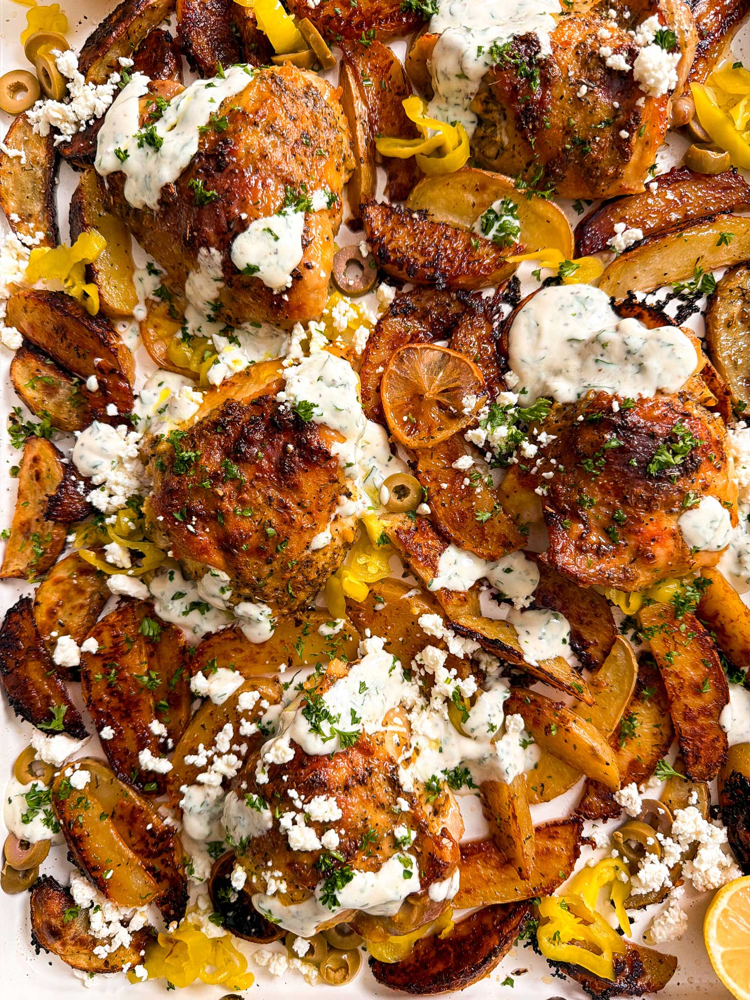
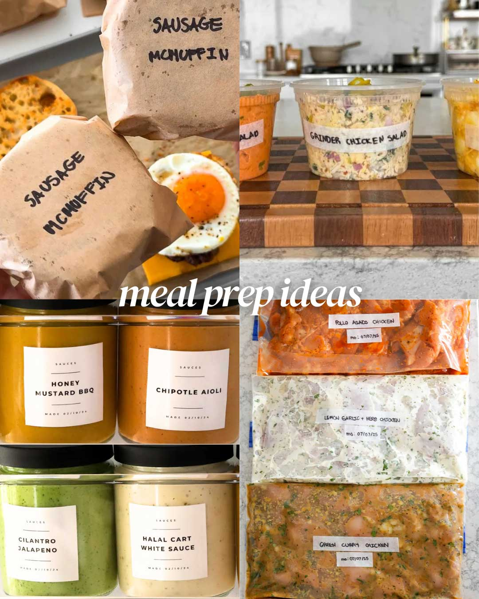

Prep Time: 10 minutes
Cook Time: 20 minutes
Total Time: 30 minutes
Yields: 40 mini pancakes
These mini blueberry cottage cheese pancakes are one of my favorite breakfasts to keep in the freezer. They taste just like classic pancakes, but hold up perfectly after freezing and reheating. I portion them into small bags so breakfast is ready whenever I need it.

KOREAN INSPIRED TUNA MELT

GREEK CHICKEN AND POTATO SHEET PAN BAKE

100 MEAL PREP RECIPES TO MAKE BUSY WEEKS EASIER